Puedes entrar en este santuario desde que llegas a la región de la torre de Hebra, justo al lado de la Posta de la Estepa.
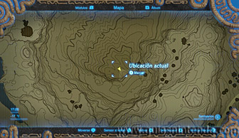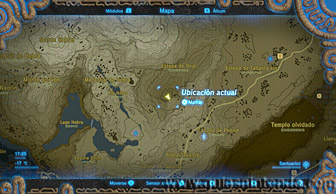
Sin embargo, delante de la entrada hay una puerta cerrada que solo puede abrirse con una gran bola de nieve.
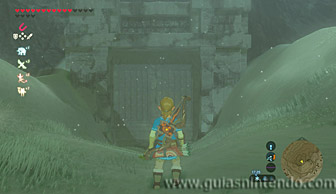
Para lograrlo ve hacia el sur (siguiendo en línea recta el camino que hay frente a la puerta cerrada) hasta llegas a una zona donde hay varias bolas de nieve pequeñas. Coge una de ellas y lánzala por el segundo surco que hay desde la izquierda. Coge como referencia la roca que queda a la izquierda. La bola se irá haciendo más grande y, si la has lanzado por la pista correcta, llegará directamente a la puerta. Puedes seguirla para ver su recorrido saltando y usando tu paravela.
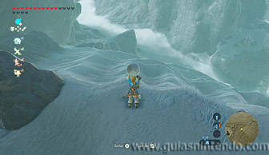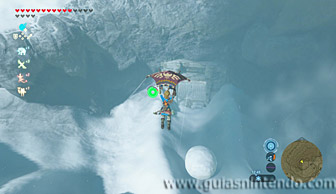
Al chocar la bola de nieve con la puerta, esta se abrirá y dejará libre la entrada al santuario.
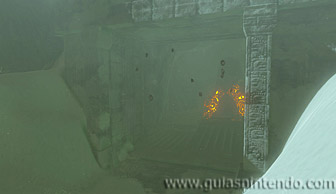
Una vez dentro tendrás que usar el arco y flechas en cada sala. Para empezar debes cortar la cuerda que sujeta la gran bola. Al caer abrirá la salida de la primera sala.
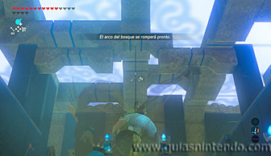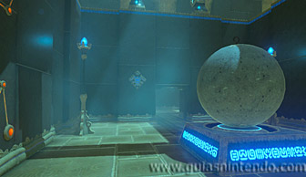
Después ve a la izquierda y encontrarás otra gran bola. Está sujeta por dos cuerdas y debes cortar la de la izquierda. Así se abrirá la puerta que te da acceso al cofre de este santuario. Podrás coger un Diamante de su interior.
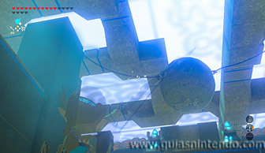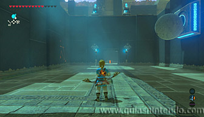
Ahora ve por el camino que dejaste a la derecha y llegarás a una tercera bola. El objetivo ahora es que caiga en línea recta hacia abajo, pero como está sujeta por dos cuerdas, al cortar una de ellas la bola se balancearía. Para solucionarlo usa el poder de paralizar en la bola. Después corta rápidamente las dos cuerdas antes de que el efecto termine. Cuando lo haga, caerá hacia abajo abriendo la puerta del altar.
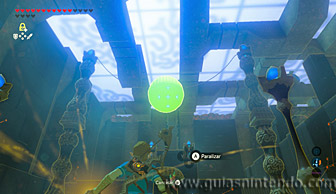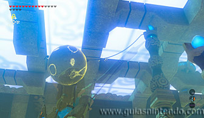
Después podrás examinar el altar para obtener un símbolo de valía.
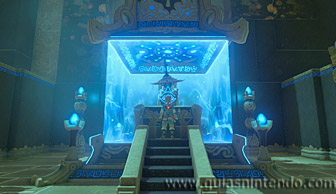